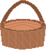

Īss spēles mērķa apraksts spēlētājam.
Spēlētājs kustina spēles varoni -grozu-, lai noķertu konfektes.
Kad konfektes krit, un spēlētājs tās noķer, spēlētājs saņem punktus.
Skaņas tiks atskaņotas automātiski, kad kritīs konfektes un kad tās tiks noķertas.
Uzvaras skaņu dzirdēsi, kad uzvarēsi, uzspiežot uzvaras skaņas pogu.+-

Skaņas efekta nozīme spēlē:
Šo skaņu dzirdēsi, kad konfektes kritīs.
So skaņu dzirdēsi, kad noķersi konfekti.
Uzvaras skaņa:
Punkti: 0